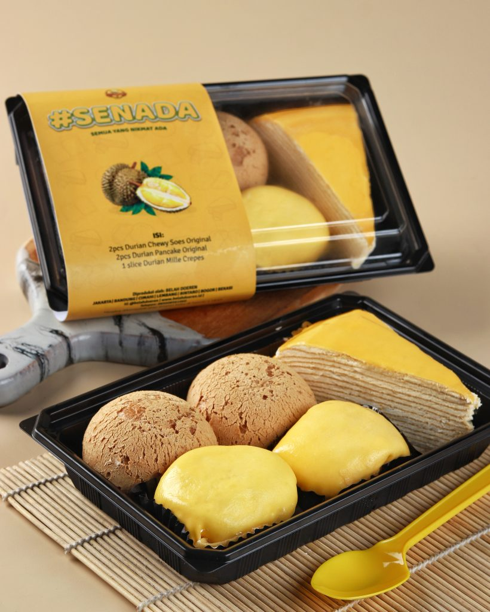
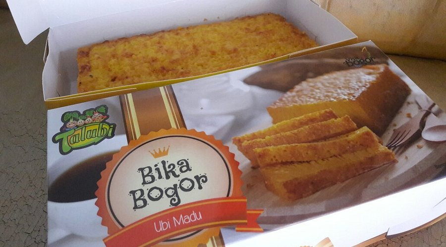
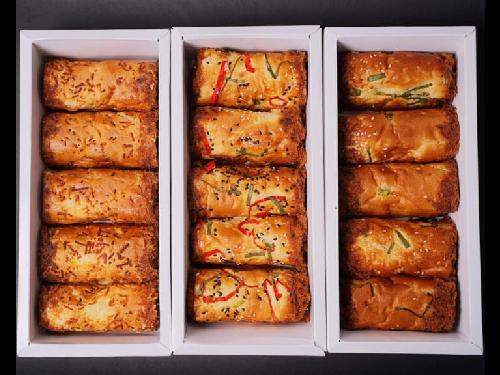

🎁 Oleh-Oleh Khas Bogor

Sumber Foto: Lihat Sumber
Belah Doeren
Belah Doeren adalah pionir produk-produk dessert dan pastry berbahan dasar durian dengan kualitas terbaik.
💸 Harga: Rp40.000 – Rp200.000
⭐ Rating: 4.7/5
📍 Lokasi: Jl. Sukasari 1 No.32, RT.06/RW.02, Sukasari, Kec. Bogor Tim., Kota Bogor, Jawa Barat 16142
🕒 Jam Operasional: 09.00 - 21.00

Sumber Foto: Lihat Sumber
{kind=link}
Bika Bogor Talubi
Bika Bogor Talubi adalah salah satu oleh-oleh khas Kota Bogor yang memadukan kelezatan kue bika dengan bahan lokal umbi-umbian, seperti talas dan ubi madu.
💸 Harga: Rp16.000 – Rp40.000
⭐ Rating: 4.6/5
📍 Lokasi: Jl. Raya Pajajaran, Jl. V Point Ruko No.1, RT.03/RW.01, Sukasari, Kec. Bogor Tim., Kota Bogor, Jawa Barat 16142
🕒 Jam Operasional: 07.00 - 21.00

Sumber Foto: Lihat Sumber
{kind=link}
Abon Gulung Bogor
Roti gulung bertekstur lembut dengan taburan serta isian abon yang sangat melimpah.
💸 Harga: Rp75.000 – Rp100.000
⭐ Rating: 4.3/5
📍 Lokasi: Jl. Sancang No.11, RT.02/RW.02, Babakan, Kecamatan Bogor Tengah, Kota Bogor, Jawa Barat 16128
🕒 Jam Operasional: 07.00 - 21.00